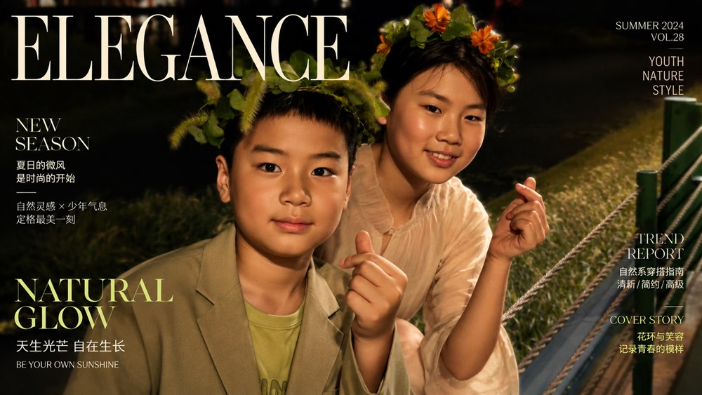

张梓萱的英语世界
Unit 7 · A Day to Remember
14 天英语轻量打卡 · 每天 25 分钟
完成后由孩子自己在纸上打勾；状态不好时允许做保底版。
手机扫码直接学习
公网部署二维码
| 天数 | 今日重点 | 旧词 | 新词 | 句子 | 练习 | 标准 | 保底 |
|---|---|---|---|---|---|---|---|
| Day 1 | 周末活动和旅行 | □ | □ | □ | □ | □ | □ |
| Day 2 | 污水处理厂 | □ | □ | □ | □ | □ | □ |
| Day 3 | 清洁过程 | □ | □ | □ | □ | □ | □ |
| Day 4 | 过程和想法 | □ | □ | □ | □ | □ | □ |
| Day 5 | 地点和感受 | □ | □ | □ | □ | □ | □ |
| Day 6 | 路上发生的事 | □ | □ | □ | □ | □ | □ |
| Day 7 | 日记和想法 | □ | □ | □ | □ | □ | □ |
| Day 8 | 农场劳动 | □ | □ | □ | □ | □ | □ |
| Day 9 | 植物和动作 | □ | □ | □ | □ | □ | □ |
| Day 10 | 食物和日记 | □ | □ | □ | □ | □ | □ |
| Day 11 | 表达同意和总结 | □ | □ | □ | □ | □ | □ |
| Day 12 | 一般过去时问答 | □ | □ | □ | □ | □ | □ |
| Day 13 | 日记短句复盘 | □ | □ | □ | □ | □ | □ |
| Day 14 | 轻测试和总结 | □ | □ | □ | □ | □ | □ |
每天怎么做
扫码打开网页，按顺序完成旧词复习、今日新词、跟读句子和小练习。最后点击“我今天完成了”，再在纸上打勾。
保底版规则
当天很累时，只听读 3 个词、1 个句子，也可以打保底版。关键是不中断。
